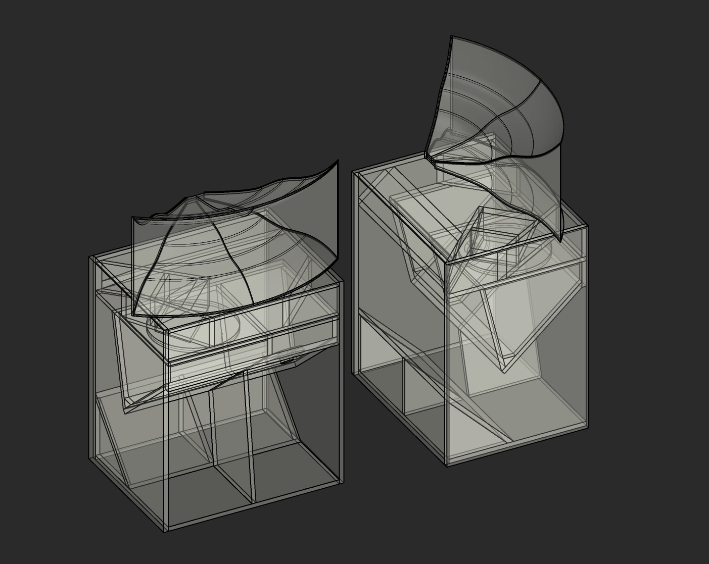

Recources

Speaker Plans and Papers on Speaker Design:
- High Fidelity Loudspeaker Enclosures by B.B. Babani
- The Book Of Horns
- Edgar Show Horn
- Edgar Midrange Horn
- Edgar Monolith Horn
- Karlson Coupler
- Klipshhorn Standard (German)
- Klipshhorn for 15in Driver
- Western Electric Horn Compendium
- Directivity In Loudspeakers
- RCF Loudspeakers Catalog 1988
- Lowther TP 1 Horn
- Open Baffle Dipoles, Rudolf Finke
- Horn Loudspeaker Design
- Horn Loudspeaker Design 2
- Electro Voice on Ported Enclosure Design (with plans)
- Edgar Voight Loudspeaker Pioneer
- Lowther Delphic 500
- Lowther Classic 200
- Lowther Classic 400
- Lowther BK Horn 101
- Lowther BK Horn 201
- Lowther BK Horn 202
- Lowther Acousta
- Back Loaded Horns
- The Big Fun Horn ; Lowther
- Eminence 15 inch mid-bass horn
- Eminence 12 inch mid-bass horn
Architecture Undergrad Art Books and Portfolios:
- Thesis Seminar 1 Final Research Book
- Arch 2141 Analysis of Casa Delle Armi
- Urban Metabolism Final Presentation
- Shoe as Interior Architecture
- Moshassuck River Spillway Manual
Sound Related Papers:
- Going Out : Walking, Listening, Soundmaking by Elana Biserna
- Xenakis Iannis Formalized Music Thought and Mathematics in Composition
- Schafer R Murray A Sound Education 100 Exercises in Listening and Soundmaking
- Sound Spatialization Bate, Bridges, Melvin
- Harrison : Sound Space Sculpture
- Edna Bates, The Composition and Performance of Spatial Music
- Notes on The Theatre of Eternal Music La Monte Young
Misc:
- Sacred/Profane Dualities
- Textiles Final Presentation 2021
- Drawings Final Presentation 2020
- Fibers And Dying Final Presentation 2021
- Surface Design Textiles Week 5 2021
- Textiles and Sound Presentation 2021
Other Articles:
- Munoz : Disidentifications
- Tool : The Lateralus Hypothesis
- Krauss Rosalind 1979 Sculpture in the Expanded Field
- Halberstam, Jack : Unworlding
- Venturini, Tommaso Diving In Magma
- Schuppli, Susan : Material Witness
Press: